PWRU1
Prüfung ausgewählter Datensets zum Thema Sustainable Finance, im Anwendungsbereich Mining
1 Einleitung
Der Verlust der Biodiversität ist voraussichtlich eine der größten Umweltkrisen aller Zeiten und wird Volkswirtschaften und Gesellschaften zum Einsturz bringen. Wenn der Finanzsektor überleben will, muss er jetzt schnell und in großem Umfang handeln (Diane-Laure Arjalies, FT, 13.09.2021).
Um diesem Verlust von Biodiversität zu begegnen, nutzen Wissenschaftler und private Firmen geografische Informationssysteme und Fernerkundungsmethoden, um mithilfe wachsender Verfügbarkeit von Geodaten bessere Umwelt-, Sozial- und Governance-Bewertungen (ESG) und letztlich besser informierte Investitionen zu tätigen, sowie nachhaltig anzupassen [1]. Hierbei integrieren Vermögensverwalter, Pensionsfonds und andere institutionelle Anleger ESG-Faktoren in ihre Anlageportfolios, welche eine wichtige Quelle für Kapitalströme auf den globalen Finanzmärkten darstellen [2]. Bisher gibt es kaum Berichte über Auswirkungen von einzelnen Minen und Minenbetreibern. Die wenigen Daten, welche zur Verfügung stehen, haben Minenbetreiber bisher selbst ermittelt und nur teilweise kommuniziert. Viele Unternehmen berichten daher nicht oder kaum über Umweltvorfälle, welche durch ihre Geschäftstätigkeit verursacht werden. In vielen Ländern ist die unabhängige Überwachung und Berichterstattung durch die Zivilgesellschaft und die Medien eingeschränkt oder sogar behindert [3]. Eine transparente Distribution dieser Informationen, kann daher große Auswirkungen auf die nach mehr Nachhaltigkeit und Transparenz strebenden Märkte haben. In den letzten Jahren ist die Bergbauindustrie jedoch mit diesem Mangel an Berichterstattung konfrontiert worden und die zunehmende Bedeutung von Themen wie Nachhaltigkeit, Umweltschutz und Biodiversität, welche zentral für nachhaltiges Management geworden ist, hervorgehoben worden [4].
Der Abbau von Ressourcen ist dabei eine uralte menschliche Tradition und wird überall auf der Welt betrieben [5]. Die Geschichte des Bergbaus ist somit mit positiven als auch mit negativen sozialen, politischen, wirtschaftlichen und ökologischen Auswirkungen verbunden [6]. Die Schweiz ist dabei weltweit die größte Drehscheibe für die Raffination des wertvollen Bergbauguts Gold. Etwa 70% des weltweit geförderten unraffinierten Goldes wird in die Schweiz importiert und dort verarbeitet. Die Schweiz verarbeitet durchschnittlich 70% des weltweiten Goldes und leistet somit den zweitgrößten Beitrag zum schweizer BIP [7]. Schweitzer NGOs, wie Swiss Better Gold Association, Responsible Mining Foundation wurden demnach gegründet um dieser einhergehenden Verantwortung, sozialer, wie umweltwissenschaftlicher Dimension gerecht zu werden [8].
Heutzutage erkennen viele Unternehmen Nachhaltigkeitsaspekte als strategisch wichtig an. Immer mehr Investoren verpflichten sich zur Integration von ESG-Daten [9]. Ein wichtiger Forschungsbericht ist somit die Entwicklung von Bewertungsgrundlagen für Investoren, welche Unternehmen, Produkte oder ganze Wirtschaftszweige hinsichtlich ihrer Nachhaltigkeit bewerten. Solche möglichst objektiven Bewertungen des Engagements eines Unternehmens für nachhaltiges Wirtschaften, kurz ESG-Ratings, werden dabei zu einem wichtigen Instrument und sind bisher noch begrenzt [10]. Darüber hinaus gibt es immer mehr Ansätze, um Minen nachhaltiger zu bewirtschaften, zum Beispiel das Rahmenwerk des Green and Climate-Smart Mining (GCSM), mit dem Anspruch, die Umwelt zu schonen, den ökologischen Fußabdruck zu verringern und eine sauberere Mineralproduktion zu fördern [11]. Um die Agenda der Vereinten Nationen für nachhaltige Entwicklung bis 2030 zu erreichen, erweisen sich die Bemühungen der Bergbauindustrie, Regierungen und NGOs allerdings bisher als unzureichend, die sozialen, ökologischen und wirtschaftlichen Aspekte einer nachhaltigen Entwicklung miteinander zu verbinden [12].
2018 führten Investmentbanken wie J.P. Morgan und Vermögensverwalter wie BlackRock den JESG-Index ein, welcher ESG-Aspekte in zentrale Benchmark-Indizes einbezieht. Nach einem Bericht des Internationalen Währungsfonds, haben Investitionen, welche sich an Benchmark-Indizes orientieren, auf den Märkten für Schwellenländeranleihen rasch zugenommen und belaufen sich 2019 auf rund 300 Milliarden US-Dollar [13]. Ein weiteres Argument für die weitere Integrierung von ESG-Aspekten ist eine verbesserte Nachhaltigkeitsleistung, welche zu geringeren Risiken für die Finanzinstitute führt, die sich auf Fremd- und Eigenkapitalfinanzierung, sowie Versicherungen für die Branche auswirken [14].
Dabei ist besonders die Landschaft von der Bergbauindustrie betroffen. Auswirkungen auf die Umwelt-, und Sozialdimension sind Entwaldung, Verlust der biologischen Vielfalt und Umweltverschmutzung [15]. Somit beeinträchtigt der Tagebau die Landschaft stark und ist weitgehend unumkehrbar. Die Landschaften in Folge eines Lebenszyklus einer Mine unterscheiden sich nach Studien [16] oft deutlich von denen, vor Beginn der Minenaktivität, zu sehen auch in eigenen Stichproben-Erhebungen (Storymap). Der Bergbau verändert die Wasserverfügbarkeit im Umland, wie auch andere wichtige Ökosystemdienstleistungen. Bemühungen zur Wiederherstellung beschränken sich oft nur auf die Ästhetik der Landschaft [16], eine objektive Analyse bspw. mittels Geodaten und Remote Sensing ist somit sinnvoll und verspricht wichtige Erkenntnisse, nicht nur für den Finanz-Sektor, sondern auch politische Akteure.
Der Forschungsbereich “Sustainable Finance” untersucht unter anderem Methoden der Nachhaltigkeitsevaluierung in der Bergbauindustrie zur weiteren Offenlegung und Transparenzmachung der hierfür zuständigen Unternehmen – da Unternehmen ihre Daten meist nicht zur Verfügung stellen [1]. Objektive und überprüfbare Bewertungen der Bergwerk-Aktivitäten fehlen weitgehend. Heute zur Verfügung stehende Geo-, Umwelt-, Sozial- und Verwaltungsdaten können dabei helfen Methoden zur Abschätzung der Umweltauswirkungen von Minenstandorten weltweit zu entwickeln. Eine kombinierte Auswahl skalierbarer und objektiver Methoden ermöglichen es Bergbaustandorte mit raumbezogenen Umwelt-, Sozial- und Verwaltungsdaten zu verknüpfen und auf ihre Nachhaltigkeit zu überprüfen anhand bspw. von Biodiversitäts-Indices, wie Entwaldungsraten verschiedener biodiverser Biome [1].
Mineralische Produkte sind für die heutige Gesellschaft und Wirtschaft unverzichtbar. Viele Grundbedürfnisse können ohne sie nicht befriedigt werden. Ein nachhaltigerer Prozess der Gewinnung, der Nutzung und des Recyclings von Mineralien kann dabei der Gesellschaft helfen Umwelt-, sowie soziale Ziele zu erreichen. Bspw. die direkte und indirekte Schaffung von Arbeitsplätzen, die Unterstützung der Entwicklung nationaler Volkswirtschaften und das Erreichen von Energie- und Ressourceneffizienzzielen [14].
In der Vergangenheit hat die Bergbauindustrie durch schlechte Abfallentsorgung, fehlende oder mangelhafte Sanierung erhebliche Umweltauswirkungen verursacht und ist somit häufig nachteilig für die Region oder das Land, in welcher der Abbau stattfindet, insbesondere in weniger entwickelten Ländern mit schwachen Strukturen [17], [15]. Dies wiederum steht in engem Zusammenhang mit sozialen Auswirkungen und Herausforderungen unterschiedlicher Schwierigkeitsgrade [18]. Auch auf die folgenden SDGs hat Mining demnach einen Einfluss und ihre Nachhaltigkeitsevaluation daher eine entsprechende Relevanz und globalpolitischen Einfluss:
| Ziele | Nr. | Thema |
|---|---|---|
| SDG | 1 | Poverty |
| SDG | 6 | Clean Water and Sanitation |
| SDG | 7 | Clean and Affordable Energy |
| SDG | 8 | Decent Work and Economic Growth |
| SDG | 14 | Life on Land |
| SDG | 15 | Life on Water |
| SDG | 16 | Peace and Justice |
Auch die Aichi-Biodiversitätsziele, englisch: Aichi Biodiversity Targets (ABT), welche bis 2020 gesetzt wurden, schlugen ebenfalls die Eignung von Fernerkundung für die Verfolgung der Fortschritte vor. Besonders die folgenden Indikatoren können so nach [19] ganz oder teilweise aus bestehenden EO-basierten (Earth Observations) Informationen abgeleitet werden.
| Ziele | Nr. | Thema |
|---|---|---|
| ABT | 5 | Verlust, Fragmentierung die Degradierung von Lebensräumen |
| ABT | 8 | Verringerung der Verschmutzung |
| ABT | 11 | Geschützte Gebiete |
| ABT | 14 | Ökosystem-Dienstleistungen |
Teilweise aus EO-basierenden Informationen abzuleiten:
| Ziele | Nr. | Thema |
|---|---|---|
| ABT | 4 | Nachhaltige Produktion und nachhaltiger Verbrauch |
| ABT | 6 | Nachhaltige Bewirtschaftung der Meeresressourcen |
| ABT | 7 | Biodiversitätsfreundliche Landwirtschaft, Forstwirtschaft und Aquakultur |
| ABT | 9 | Kontrolle von invasiven gebietsfremden Arten |
| ABT | 10 | Korallenriffe und andere empfindliche Ökosysteme |
| ABT | 12 | Verhinderung des Aussterbens bedrohter Arten |
| ABT | 15 | Widerstandsfähigkeit von Ökosystemen |
Es ist von gesellschaftlichem Interesse Methoden zu entwickeln, um diese Indikatoren abzuleiten und breit angelegte, wiederholbare und kostengünstige Messungen durchzuführen [19]. Demnach können Investoren heute bspw. über Satellitenaufnahmen Brände, Methan-ausflussraten und Entwicklungsfortschritte in Echtzeit überwachen [1]. Daher besteht grundsätzlich ein großer Bedarf an objektiven, wissenschaftlich fundierten Daten für evidenzbasierte, nachhaltige Investitionsentscheidungen, welche die Biodiversitätsveränderungen global abbilden.
Die Arbeit von [20] trug bisher dazu bei, ein kombiniertes Set von skalierbaren und objektiven Methoden, zu entwickeln, welche es ermöglichen, Bergbaustandorte mit räumlichen Umwelt-, Sozial- und Governance-Daten zu verknüpfen. Hierzu wurden bereits verschiedene Methoden, wie Puffer und Annotation von Verwaltungseinheiten an einer großen Anzahl von Bergbaustandorten für verschiedene Umweltvariablen wie Abholzung in zwei Untersuchungsgebieten in Peru und Westafrika getestet. Speziell wird hier auch die räumliche Ausdehnung der Minen berücksichtigt. Die Ergebnisse zeigen, dass die getesteten Methoden tatsächlich die Integration von Standorten mit Geodaten ermöglichen und nützliche Erkenntnisse liefert.
Weitere Unternehmungen bezüglich der Validierung von Umweltauswirkungen im Bergbausektor belaufen sich auf den Vergleich von Satellitenbildern verschiedener Zeiträume. Sowie der Nutzung von Klassifizierungsalgorithmen zur Quantifizierung von Umweltveränderungen. Auch hochauflösende 3D-Modelle von Teilgebieten wurden bereits erstellt, in welchen Bildverarbeitungs-, sowie Machinelearning-Technologien kombiniert wurden [1]. Zur Erkenntnisgewinnung aus der Fernerkundung und weiteren Verfeinerung von ESG-Ansätzen mit Geodaten wird insbesondere die Produktion, die abgebauten Gebiete und das abgetragene Material auf der Grundlage einer Kombination aus 3D-Rekonstruktion, SAR Change Detection Index und multispektraler Landbedeckungsanalyse untersucht. Ziel war es bisher, Veränderungen in den Produktionsraten sowie die Ausweitung der Minenaktivitäten und die Auswirkungen auf das umliegende Ökosystem zu erkennen [1].
Eine rasche Entwicklung von künstlicher Intelligenz-Technologien in der quantifizierbaren Bildanalyse, sowie die Anpassung dieser Techniken an Satelliten- und Luftbilder, hat zur Gründung einer Reihe von Unternehmen für die Analyse von Weltraumdaten geführt, wie Orbital Insight, Descartes Labs, SpaceKnow und Impact Observatory, sowie weiterer großer Programme zur Erweiterung der Fähigkeiten des maschinellen Lernens in bestehenden Unternehmen für Geodaten-Technologie, z.B. Esri ArcGIS, Maxar GBDX, Planet PlanetScope, Airbus UP42, Google Earth Engine und Microsoft Planetary Computer [21].
Impact Observatory hat Deep-Learning-Algorithmen entwickelt, die 10m-Sentinel-2-Bilder nutzen, um dynamische, globale Landnutzungs- und Bodenbedeckungs-Zeitreihendatensätze (LULC) zu erstellen, welche als Entscheidungsgrundlage dienen, um Umweltauswirkungen von bspw. Bergbauaktivitäten zu überwachen. Die Automatisierung ermöglicht eine zeitnahe Aktualisierung der LULC-Karte innerhalb eines Jahres und eine Überwachung nahezu in Echtzeit [21].
Ähnliche globale 10m-LULC-Produkte sind von anderen Teams geplant, z. B. dem ESA World Cover-Programm, welche die Google Earth Engine und Microsoft Planetary Computer nutzen. Satellitenbilder, wie denen des Landsat-Satelliten dienen als wichtige Datenquellen [22]. Diese Karten sind von großer Bedeutung für die Identifizierung verbleibender Wildnis Gebiete zur Unterstützung von Planungs- und Managementmaßnahmen. Die Industriepartner von Impact Observatory finanzieren die Entwicklung und Verarbeitung dieser Arbeit, welche der Industrie, dem Finanzwesen und den Regierungen nahezu in Echtzeit und auf Abruf wissenschaftlich fundierte Erkenntnisse liefert. Impact Observatory ermöglicht es, globale LULC- und abgeleitete wissenschaftliche Zeitreihenprodukte als öffentliches Gut jährlich zu veröffentlichen [21].
Kleinräumige RS-Untersuchungen Sozialer- und Umweltauswirkungen von Bergwerken, wie [23] beobachteten LULC-Veränderungen in zwei Bergbaustandorten in Tansania in den Jahren 1997, 2010 und 2017. Eine überwachte Klassifizierung von Landsat-Bildern zeigte, wie Buschland den Wald als vorherrschenden Bedeckungstyp ersetzt hat. [24] zeigt die räumlich-zeitlichen Veränderungsmuster von vier verschiedenen LULC zwischen 1987 und 2017 in einer Region im östlichen Teil Kameruns. Die Studie ergab signifikante Veränderungen der LULC wie den Rückgang der natürlichen Vegetation und einen Anstieg der Zahl der Siedlungen als Folge des Goldbergbaus. [25] bewerteten LULC-Veränderungen in der Zamfara-Sahelzone in Nigeria mit Hilfe von Daten aus Feldforschung und GIS-Archiven. Ihre Studie integrierte erstmals standortspezifische Informationen über die Dynamik von LULC-Veränderungen. [26] überlagerte die weltweiten Standorte von Minen mit Schutzgebieten. Die Studie zeigte, dass 7 Prozent der von ihnen untersuchten Minen direkt in einem Schutzgebiet liegen und weitere 27 Prozent in einem Puffer von zehn Kilometern um Schutzgebiete herum. [27] überlagerte räumlichen Standorte von Minen zudem mit globalen terrestrischen Biomen.
In der Arbeit von [28] wurde ein neuer Datensatz an Minenpoligonen veröffentlicht, welcher durch die visuelle Interpretation von Satellitenbilder gewonnen wurde. Das Ergebnis: Ein globaler Datensatz, aus 21.060 Polygonen von 57.277 km². Zweck dieser Arbeit ist es, mehrere Ausgewählte Datensätze [28], S&P, [29] in ihrer Genauigkeit zu evaluieren und hinsichtlich der Entwicklung von anwendungsorientierten Tools und Methoden zur Bewertung und Überwachung der ESG-Auswirkungen auf und in der Nähe von Minenstandorten zu testen.
1.1 Methodik
In dieser Arbeit werden Minendaten in vier Case-Studies der Fokusräume (Brasilien, DR Kongo, Indonesien) auf ihre Datengenauigkeit geprüft: Die Minen-Daten stammen von S&P, welche von der Forschungsgruppe zur Verfügung gestellt wurden. Außerdem wird der umfangreiche Datensatz von [28] für die Arbeit verwendet und exemplarisch auf seine Datenqualität geprüft. Der Entwaldungsdatensatz von [29] wurde bereits in die S&P Daten eingerechnet und die Ergebnisse mit Satellitenbildern aus verschiedenen Zeiträumen verglichen, siehe Storymap. Für die Veränderungen in der Zeitdimension wurde das Programm Google-Earth-Pro verwendet, um zeitliche Veränderungen in der Waldbedeckung und Minenausbreitung zu dokumentieren. Die vorhandenen Daten wurden hiermit auf ihre Plausibilität überprüft. Konkret wurden die [28] -Polygone und die S&P Punktdaten in die Google Earth Engine im KML-Format eingeladen, um so mittels der zeitlich und qualitativ gut aufgelösten Luftbilder von Google visuell zu vergleichen. Zur besseren Vergleichbarkeit werden sie in Storymap dargestellt und mit den gegebenen Tools nebeneinandergestellt.
Bei den gewählten Minen handelt es sich um eine Auswahl der Länder Brasilien, Demokratische Republik Kongo und Indonesien. Die Auswahl der folgenden vier Minen wurde getätigt, da es sich hierbei um Länder handelt, welche vorwiegend mit Biomen des tropischen Regenwaldes bedeckt sind und die dortige Bergbauaktivität einen relativ gravierenden Einfluss auf die dortige Biodiversität ausübt [30].
Bezüglich der Entwaldungsdaten von [29] wurden 5km-Puffer ausgehend der S&P -Datenpunkte von [20] erstellt. Dieser Pufferradius wurde gewählt, um bekannte Umweltereignisse (Kapitel 2.2, Kapitel 2.3) in der Entwaldungs-Analyse zu berücksichtigen.
Bei der Auswahl der Minen werden verschiedene Kriterien beachtet:
- [28] -Polygone und S&P Daten sind miteinander verschnitten
- Minen befinden sich in den Ländern Brasilien, Demokratische Republik Kongo, oder Indonesien aufgrund der erfassten und zu kontrollierenden Entwaldungsdaten von [29]
- Hohe Variablen-Werte, wie größte Minen-Fläche, Höchste Entwaldung (C_0) wurden bevorzugt, um eine möglichst deutliche flächendeckende Umweltveränderung zu evaluieren.
- Aktive Minen wurden bevorzugt, um Veränderungen in aktuellen Satellitenbildern feststellen zu können.
- Jedes Land verfügt über einen deutlichen Minenhotspot(siehe Fig 1). Die Minensuche wurde in diesen dichten Minenhotspots durchgeführt: Grund hierfür war die hohe Wahrscheinlichkeit Umweltsauswirkungen zu erkennen.
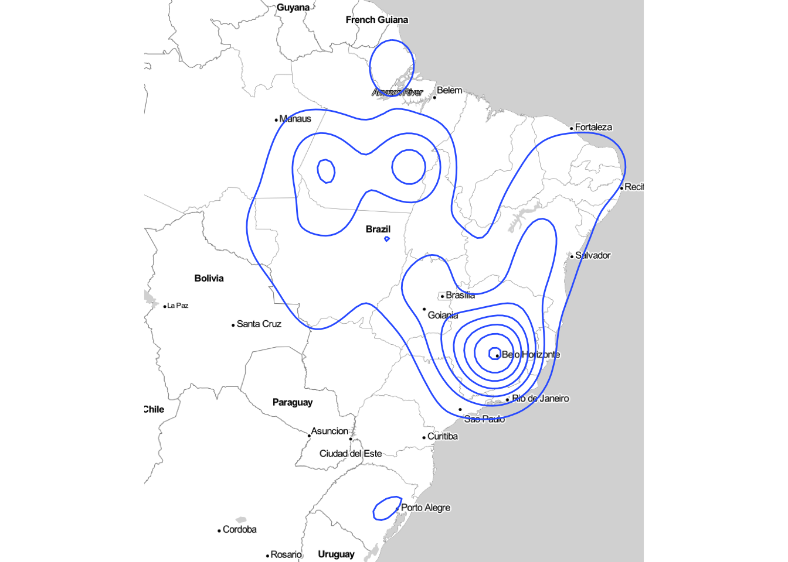
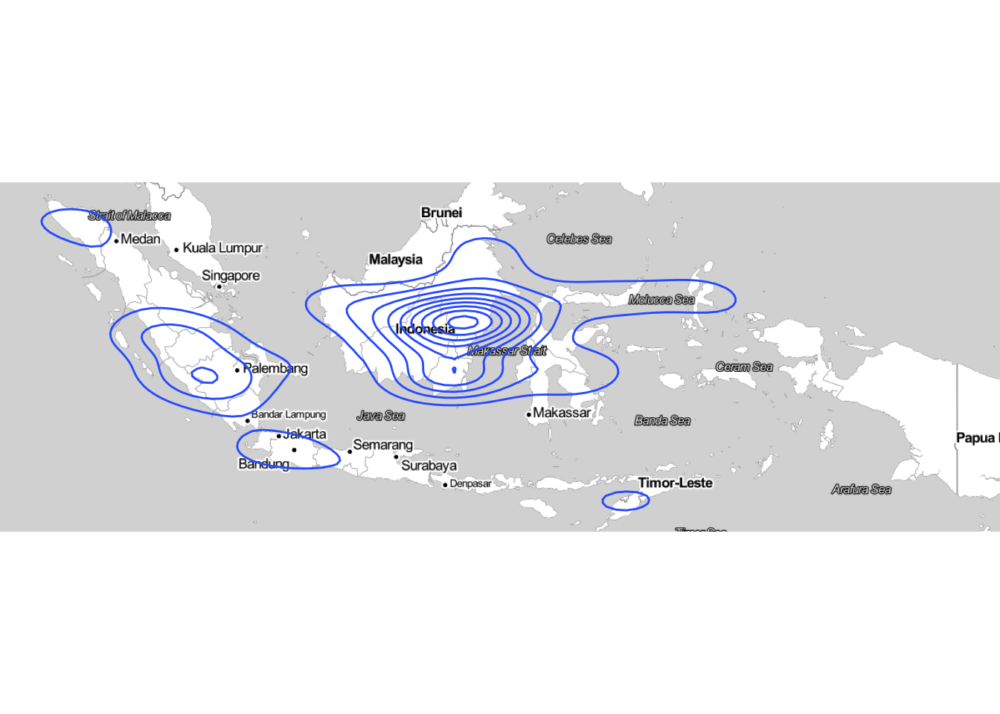
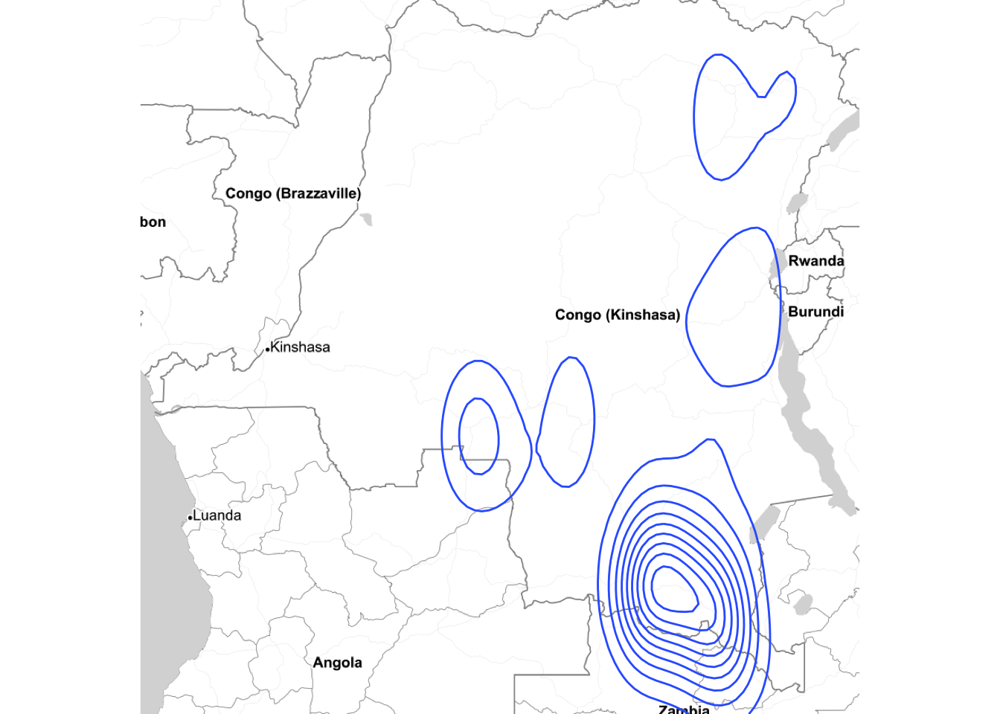
- Minen in Brasilien wurden gewählt, da sie Beispiele für Umweltdesaster darstellen, welche durch Minenaktivität ausgelöst wurden. Deutliche Umweltveränderungen sind in den Satellitenbildern Storymap zu erkennen, sowie medial gut dokumentiert, siehe: Kapitel 2.2 & Kapitel 2.3).
Das Ziel ist es folgende Fragen zu beantworten: Wie passen die Daten räumlich und zeitlich zueinander? Geben die angegebenen Daten-Zeitpunkte, wie Entwaldung und Projekt-Start plausible Zeitpunkte wieder und sind so auch in den Satellitenbildern zu erkennen? Die folgenden Variablennamen des S&P-Datensatzes wurden nachgeprüft:
- Primary Commodity
- Development Stage
- Activity Status
- Mine Type
- Property Name
- Commodities
- Koordinaten
- List of Owners
1.2 Erkundung der Vollständigkeit der S&P-Daten
Hier werden die Daten mittels des Amelia-Packages auf ihre Datenvollständigkeit geprüft. Die Funktion Missmap verwendet einen speziellen Algorithmus zur Imputation fehlender Werte, in diesem Fall des S&P-Datensatzes.
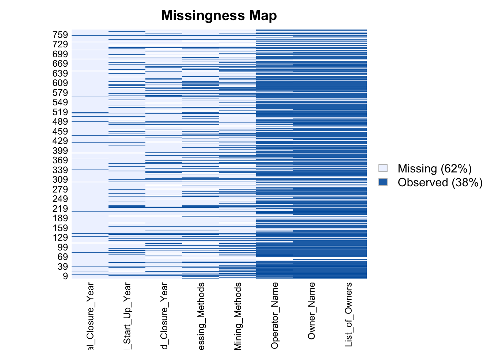
Die Missingnesmap zeigt in diesem Fall die Anzahl der fehlenden und vorhandenen Daten in % des S&P Datensatzes für Brasilien. Das Ergebnis zeigt, dass 62 % der abgefragten Daten fehlen.
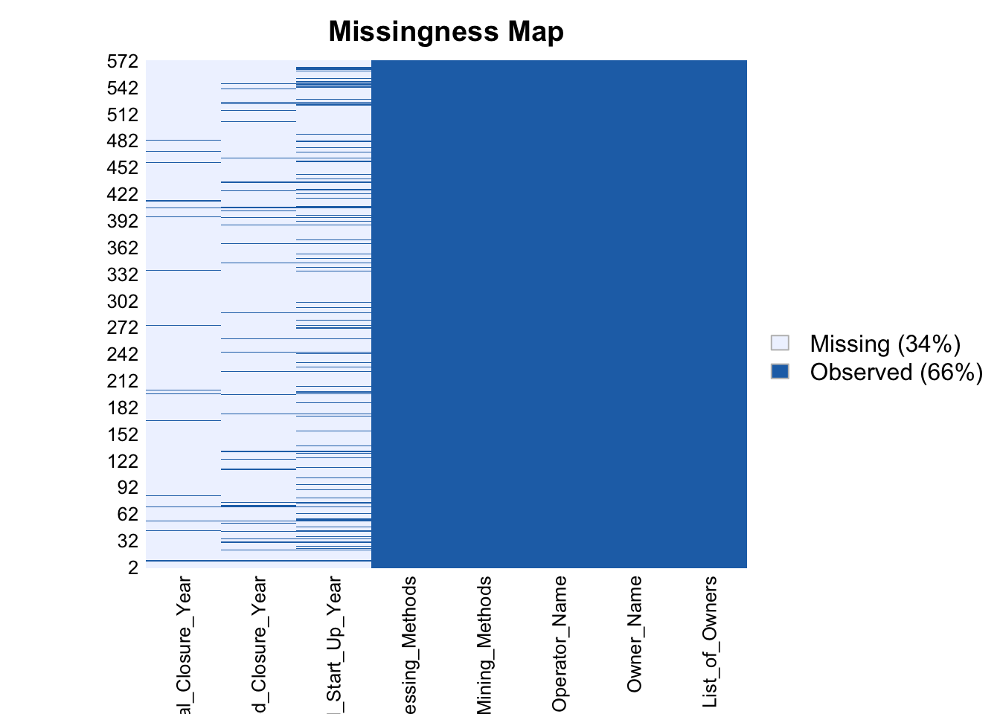
Die Missingnesmap zeigt in diesem Fall die Anzahl der fehlenden und vorhandenen Daten in % des S&P Datensatzes für Indonesien. Das Ergebnis zeigt eine höhere Auflösung der Daten, mit Ausnahme der Informationen in den Variablen: Actual_Start_Up_Year, Projected_Closure_Year, Actual_Closure_Year. Hier fehlen 34% der abgefragten Daten
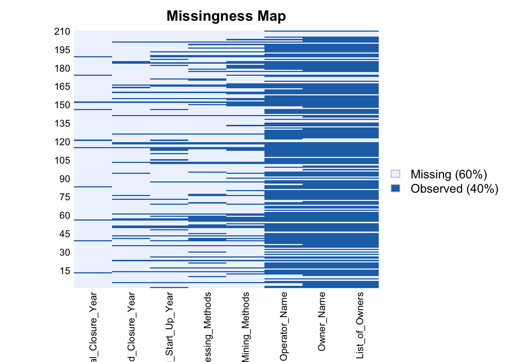
Die Missingnesmap zeigt in diesem Fall die Anzahl der Fehlenden und Vorhandenen Daten in % des S&P Datensatzes für DR Congo. Das Ergebnis zeigt eine geringere Auflösung der Daten. Hier fehlen 60% der abgefragten Daten. Der Datensatz besteht dabei nur aus 210 Einträgen, ist jedoch vollständiger als Fig 2.
2 Brasilien
2.1 Brasilien Minen-Hotspot Minas Gerais
2.1.1 Datenexploration der S&P Daten Brasiliens

Der Primärrohstoff des Minenhotspots Minas Gerais ist Eisenerz, sowie Gold.
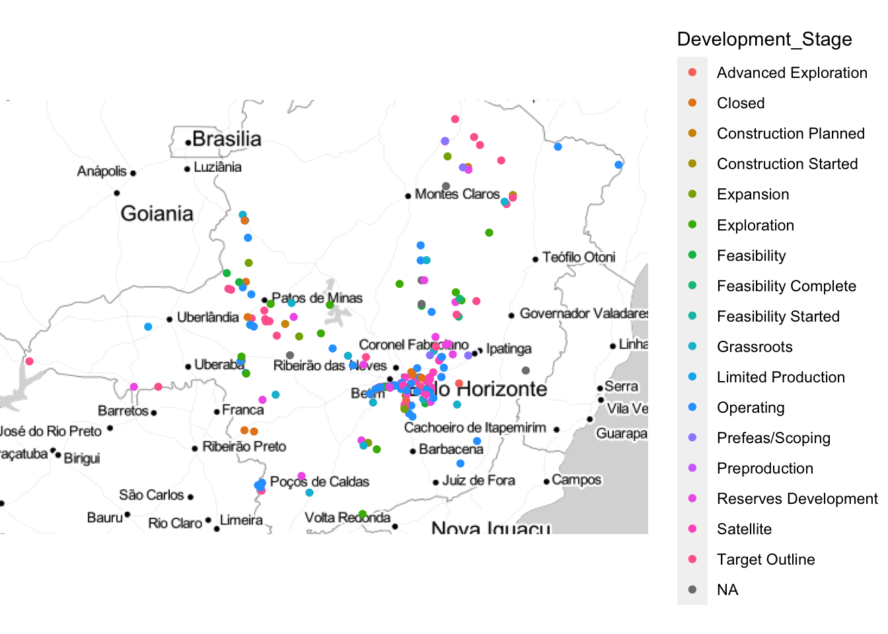
Die Variable Development_Stage gibt Informationen über den Zustand der jeweiligen Minen im Bundestaat Minas Gerais. Man kann erkennen, dass die Mehrheit der erfassten Minen im S&P Datensatz in Betrieb sind, bzw. erfasste Probeborungen darstellen (Satellite).

Hier ist die Datenverteilung der verschiedenen Activitäts-Zustände der Minen visualisiert. Die Mehrheit der Daten beinhaltet Active oder Inaktive Minen. Wobei wenige Daten fehlen (NA) und manche Minen kurzfristig in der Aktivität pausieren.
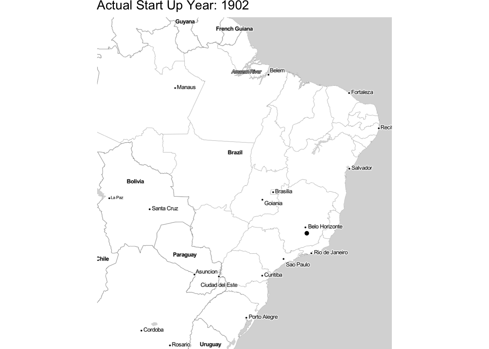
Es zeigt sich, dass einige Datenpunkte fehlen. Auch suggerieren die Daten eine vermehrte Eröffnung von Minen in den letzten 30 Jahren. Der Datensatz enthält demnach hauptsächlich Datenpunkte der Variable “Actual Start Up Year” der letzten 30 Jahre.
2.2 Medienberichte zum Unglück der Fallbeispiel-Mine Bento Rodrigues
Am 5. November 2015 brachen im Südosten Brasiliens zwei Dämme und schickten eine Flut von Bergbauschlamm durch das Dorf Bento Rodrigues. Die schlammigen Überschwemmungen aus einem Eisenerzabbau zerstörten Hunderte von Häusern, töteten einige Bewohner und ließen andere vermisst zurück [31]. Bei dem Unglück wurden 60 Millionen Kubikmeter Abwasser wurden freigesetzt, von denen der größte Teil Bento Rodrigues betraf [32]. Städte bis zu 300 Kilometer flussabwärts verloren den Zugang zu Trinkwasser. Die Verantwortung lag bei dem brasilianische Bergbauunternehmen Samarco Mineração, ein Joint Venture zwischen dem brasilianischen Bergbaukonzern Vale und dem britisch-australischen Rohstoffunternehmen BHP Billiton, welche jeweils 50 Prozent der Aktien halten [33] und siehe auch (S&P Daten). Mehr als 500 Menschen verloren durch die Schlammlawine ihre Häuser und mehrere hunderttausend wurden von der Trinkwasserversorgung abgeschnitten. Proteste der Anwohner verhinderten bisher eine Wiederinbetriebnahme [31]. Demnach ist das Projected_Closure_Year für 2053 nicht mehr aktuell.
Zusammenfassung des Schadens nach: Die Menge an ausgetretenem Schlamm beträgt nach [34]: 32 bis 62 Millionen Kubikmeter. Die Größe des betroffenen Gebiets: 680 Kilometer Flusslauf. Die Schadenshöhe: 5 bis 55 Milliarden USD
In diesem Video lassen sich die Ausmaße des Schadens erahnen.
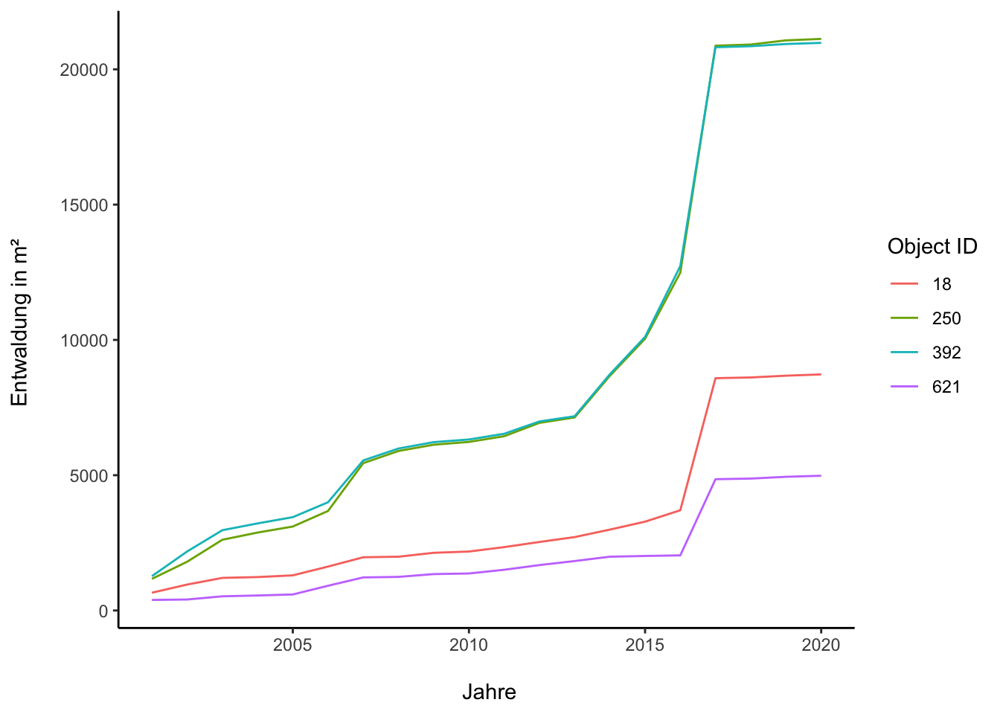
2.2.1 Vergleichende Beschreibung der Daten und der Observation
In diesem Fall liegen vier S&P Minen Punkte innerhalb eines Minenpolygons und ein Punkt außerhalb davon. Eine genaue Zuordnung zu den [28] -Polygonen ist daher erst nach einiger Internetrecherche (Medienartikel) möglich. Alle Minen sind allerdings zugehörig zu einem Konzern: Samarco Mineração S.A.. Wie sich aus dem Vergleich der Variable Actual_Start_Up_Year erkennen lässt, sind die Minen alle unterschiedlichen zeitlichen Ursprungs. Daher stellt der Datensatz ebenfalls eine historische Dimension dar und es werden Minen aufgeführt, welche in späteren Jahren miteinander zusammengeführt, bzw. aufgekauft wurden.
- Die Entwaldungsdaten Fig 10 zeigen eine langsam steigende Entwaldung bis ca. 2015. Besonders die Entwaldung der südlichen Minen (inkl. Tabelle 4) verdoppelt sich 2015 - 2017. Ein Zusammenhang mit dem Dammbruch Kapitel 2.2 ist realistisch.
- Laut Medienberichten muss das Closure_Year daher falsch sein, da am 9. November 2015 der offizielle Zeitpunkt der Schließung, aufgrund des Unglücks bestimmt wurde.
- Die [28] -Polygone sind aktuell (Juni 2022)
- Das Projected_Closure_Years ist für 2038 angesetzt und daher nicht mehr aktualisiert worden.
- Bestätigt werden konnte durch Satellitenvergleichen der Minenstart vor 1984, siehe Storymap
- In der folgenden Tabelle lassen sich die Informationen der vier Minen vergleichen. In diesem Beispiel ist die Datenqualität sehr hoch, sowie homogen. Historisch sind die vier Minen zusammengewachsen, welches das zusammenhängende [28] -Polygon erklärt. Es zeigt sich, dass [28] keinen Unterschied in der Zugehörigkeit, bzw. der Eigentumsrechte macht.
| Type of Information | Mine: Mariana | Mine: Fabrica Nova | Mine: Alegria | Mine: Samarco |
|---|---|---|---|---|
| brazil_all_mines:OBJECTID | 392 | 250 | 18 | 621 |
| brazil_all_mines:Property_Name | Mariana | Fabrica Nova | Alegria | Samarco |
| brazil_all_mines:Property_ID | 50230 | 74749 | 74748 | 31893 |
| brazil_all_mines:Primary_Commodity | Iron Ore | Iron Ore | Iron Ore | Iron Ore |
| brazil_all_mines:Development_Stage | Operating | Satellite | Satellite | Operating |
| brazil_all_mines:Activity_Status | Active | Active | Active | Under Litigation |
| brazil_all_mines:Mine_Type1 | Open Pit | Open Pit | Open Pit | Open Pit |
| brazil_all_mines:Property_Name1 | Mariana | Fabrica Nova | Alegria | Samarco |
| brazil_all_mines:Commodity_1 | Iron Ore | Iron Ore | Iron Ore | Iron Ore |
| brazil_all_mines:Country_Name | Brazil | Brazil | Brazil | Brazil |
| brazil_all_mines:Global_Region | Latin America and Caribbean | Latin America and Caribbean | Latin America and Caribbean | Latin America and Caribbean |
| brazil_all_mines:State_Province | Minas Gerais | Minas Gerais | Minas Gerais | Minas Gerais |
| brazil_all_mines:List_of_Owners | Vale S.A. (Owner) 100% | Vale S.A. (Owner) 100% | Vale S.A. (Owner) 100% | BHP Group Limited (Venturer) 50%; Vale S.A. (Venturer) 50% |
| brazil_all_mines:Owner_Name | Vale S.A. | Vale S.A. | Vale S.A. | BHP Group Limited |
| brazil_all_mines:Owner_HQ | Rio de Janeiro | Rio de Janeiro | Rio de Janeiro | Melbourne |
| brazil_all_mines:Owner_Address | Praia de Botafogo 186 | Praia de Botafogo 186 | Praia de Botafogo 186 | 171 Collins Street |
| brazil_all_mines:Operator_Name | Vale S.A. | Vale S.A. | Vale S.A. | Samarco Mineração S.A. |
| brazil_all_mines:Actual_Start_Up_Year | 1976 | 2005 | 1992 | 1977 |
| brazil_all_mines:Projected_Start_Up_Year | NA | NA | NA | NA |
| brazil_all_mines:Projected_Closure_Year | 2038 | 2040 | 2033 | 2053 |
| brazil_all_mines:Actual_Closure_Year | NA | NA | NA | NA |
| brazil_all_mines:Mining_Methods | Open Pit | Open Pit | Open Pit | Open Pit |
| brazil_all_mines:Processing_Methods | Crushing | Crushing, Flotation, Grinding | Crushing, Flotation, Grinding | Crushing, Flotation, Grinding |
2.3 Medienberichte zum Unglück der Fallbeispiel-Mine Córrego do Feijão
Am 25. Januar 2019 brach eine Stützmauer am Rande eines Teichs mit schlammartigem Abfallmaterial aus einer brasilianischen Mine plötzlich zusammen. Der Einsturz in der Mine Córrego do Feijão im südöstlichen Bundesstaat Minas Gerais setzte eine Flut von Abraum frei, welche Gebäude und einen Bus überrollte, sowie nahe gelegene Häuser überschwemmte [35]. Die Abraummassen ergossen sich über die Mine, die nahe gelegene Stadt Brumadinho und den Paraopeba-Fluss, welche eine wichtige Quelle für Trink- und Bewässerungswasser für die Menschen in der Region darstellt. Es kamen mehr als 100 Menschen ums Leben [36]. Über 11,7 Millionen Kubikmeter Abfallmaterial wurden in dem Becken zurückgehalten, nach dem Zusammenbruch waren die Schlammablagerungen flussabwärts an einigen Stellen bis zu 5 Meter dick [35].
2.3.1 Ansicht der Mine Córrego do Feijão
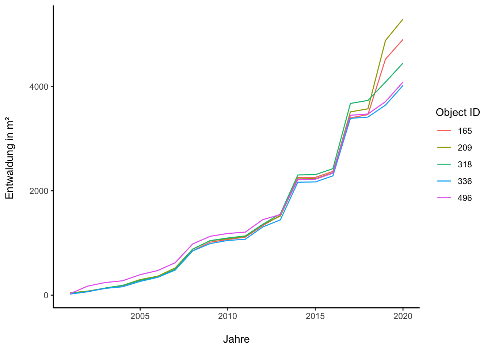
2.3.2 Vergleichende Beschreibung der Daten und der Observation
Auch hier liegen 3 S&P Minen-Punkte innerhalb des Minenpolygons und zwei Punkte direkt angrenzend außerhalb. Eine genaue Zuordnung ist hier einfacher. Allerding sind alle Minen zugehörig zu einem Konzern: Samarco Mineração S.A.
- Die Entwaldungsdaten Fig 12 zeigen eine konstant steigende Entwaldung seit 2001. Die Entwaldung je Mine ist praktisch identisch, bis auf die Jahre 2018-2020. Ein Zusammenhang mit dem Dammbruch Kapitel 2.3 ist realistisch.
- Laut den Daten ist die Mine lediglich 12 Jahre in Betrieb gewesen, welches dem Ausmaß der Mine nicht entspricht.
- Laut den Daten ist ebenfalls das Unglück drei Jahre nach Schließung der Mine in Kraft getreten.
- Der Minenstart 2003 kann nicht bestätigt werden.
- Im Vergleich mit [28] aus dem Jahr 2020 ist mittlerweile eine, geringfügig weitere Expansion erfolgt, siehe Storymap.
- Die folgende Tabelle zeigt relevante S&P Einträge der fünf Minen im ausgewählten Standort. Die Minen haben teilweise sehr unterschiedliche Informationen, teilen sich jedoch ein [28] -Polygon, bzw. liegen außerhalb dessen.
- Sie teilen dieselbe Information der Primary_Commodity, enthalten jedoch unterschiedliche Informationen über Development_Stage und Activity_Status.
- Teilweise fehlen alle Zeitdaten, sowie die Daten Mine_Type, Mining_Methods & Processing_Methods.
- Die Mine Carrapato liegt außerhalb des Polygons, stellt die einzige aktive Mine des Perimeters dar, gehört nach S&P zur Larf Consultoria Ltda. und enthält kaum Informationen über das Abbaugeschehen.
| Type of Information | Mine: Corrego do Feijao | Mine: Carrapato | Mine: Itaminas | Mine: Jangada | Mine: Paraopeba |
|---|---|---|---|---|---|
| OBJECTID | 209 | 165 | 318 | 336 | 496 |
| Property_Name | Corrego do Feijao | Carrapato | Itaminas | Jangada | Paraopeba |
| Primary_Commodity | Iron Ore | Iron Ore | Iron Ore | Iron Ore | Iron Ore |
| Development_Stage | Satellite | Target Outline | Operating | Satellite | Operating |
| Activity_Status | Temporarily On Hold | Active | Inactive | Temporarily On Hold | Temporarily On Hold |
| Mine_Type1 | Open Pit | Open Pit | Open Pit | ||
| Country_Name | Brazil | Brazil | Brazil | Brazil | Brazil |
| Global_Region | Latin America and Caribbean | Latin America and Caribbean | Latin America and Caribbean | Latin America and Caribbean | Latin America and Caribbean |
| State_Province | Minas Gerais | Minas Gerais | Minas Gerais | Minas Gerais | Minas Gerais |
| List_of_Owners | Vale S.A. (Owner) 100% | Larf Consultoria e Administracao Ltda. (Owner) 100% | NA | Vale S.A. (Owner) 100% | Vale S.A. (Owner) 100% |
| Owner_Name | Vale S.A. | Larf Consultoria E Administracao Ltda | Vale S.A. | Vale S.A. | |
| Actual_Start_Up_Year | 2003 | NA | NA | 2001 | 2001 |
| Projected_Start_Up_Year | NA | NA | NA | NA | NA |
| Projected_Closure_Year | 2015 | NA | NA | 2027 | 2042 |
| Actual_Closure_Year | NA | NA | NA | NA | NA |
| Mining_Methods | Open Pit | Magnetic Separation | Open Pit | Open Pit | |
| Processing_Methods | Crushing, Flotation, Grinding | Crushing |
3 Indonesien
3.1 Datenexploration der S&P Daten Indonesiens
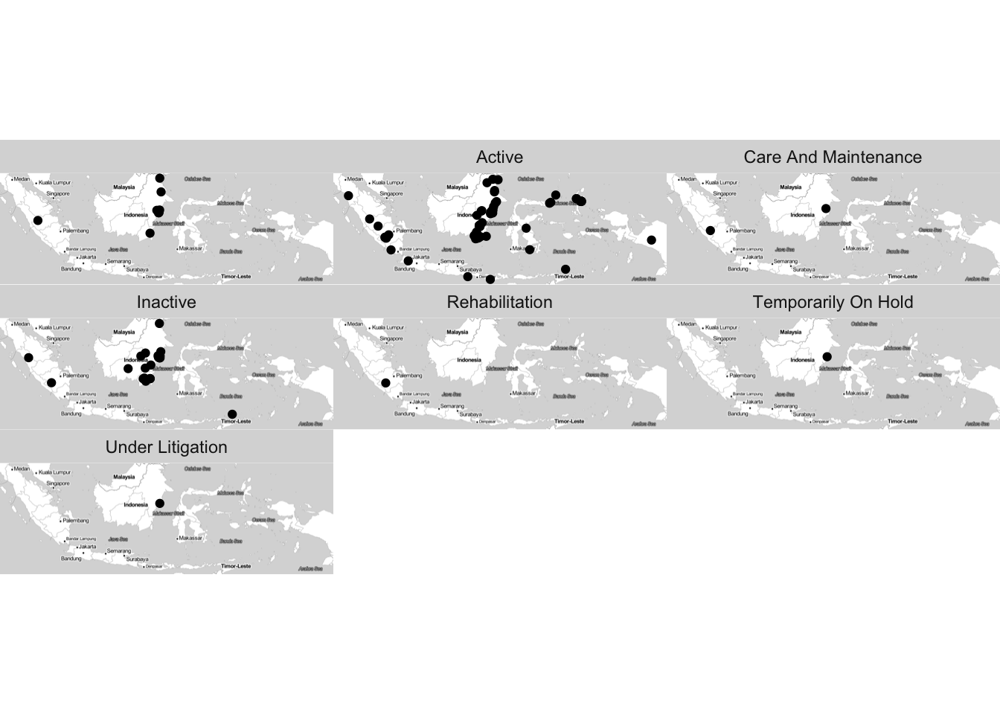
Hier wird die Datenverteilung der verschiedenen Aktivitäts-Zustände der Minen visualisiert. In diesem Fall dient eine aktive Mine als Case Study. Die Mehrheit der Daten beinhaltet Aktive oder Inaktive Minen.
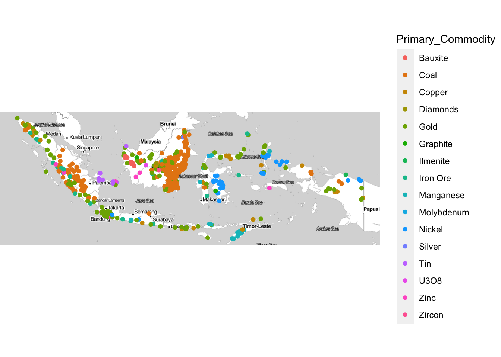
Es zeigt sich ein deutlicher Trend der Primary_Commodity anhand der Regionen Indonesiens. Der Minenhotspot Fig 1 besteht sichbar hauptsächlich aus Kohle Minen. Wobei der nähere Untersuchungsraum einen deutlichen Nickel-Schwerpunkt aufweist.
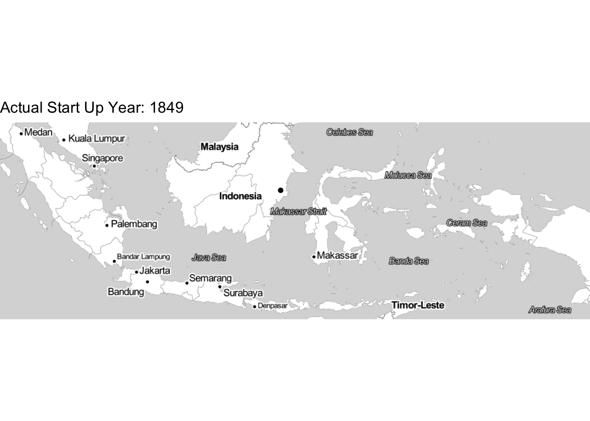
Hier zeigt sich deutlich, dass viele Datenpunkte fehlen. Die Daten suggerieren eine vermehrte Eröffnung von Minen in den letzten 30 Jahren. Dies ist vermutlich lediglich der Datenqualität geschuldet und es wurden vermehrt in letzten 30 Jahren Datenpunkte (Neue Minen) dem Datensatz hinzugefügt.
3.2 Timah Nickel Mine Indonesien
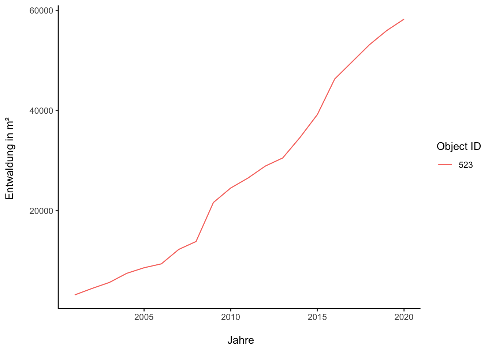
3.2.1 Vergleichende Beschreibung der Daten und der Observation
- Der Datensatz besteht aus einem S&P Punkt, sowie mehreren [28] -Polygonen.
- Die Entwaldungsdaten Fig 17 zeigen eine konstant steigende Entwaldung seit 2001, die Satellitenbilder bestätigen diese Werte
- Die [28] -Daten stammen vermutlich ca. aus dem Jahr 2014
- Die Angabe des Actual_Start_Up_Year aus 2015 ist daher nicht ganz korrekt
- Der Activity_Status “Active” ist korrekt
- Die mittlerweile relativ weiträumige Expansion (Im Vergleich zu den [28] -Polygonen) erfolgte bis einschließlich 2022, siehe Storymap
| Type of Information | Information | |
|---|---|---|
| Indonesien_mines:OBJECTID | 524 | |
| Indonesien_mines:Property_Name | Timah Nickel | |
| Indonesien_mines:Property_ID | 77256 | |
| Indonesien_mines:Primary_Commodity | Nickel | |
| Indonesien_mines:Development_Stage | Operating | |
| Indonesien_mines:Activity_Status | Active | |
| Indonesien_mines:Property_Name1 | Timah Nickel | |
| Indonesien_mines:Commodity_1 | Nickel | |
| Indonesien_mines:Country_Name | Indonesia | |
| Indonesien_mines:Global_Region | Asia-Pacific | |
| Indonesien_mines:State_Province | Sulawesi Tenggara | |
| Indonesien_mines:List_of_Owners | PT TIMAH Tbk (Owner) 100% | |
| Indonesien_mines:Owner_Name | PT TIMAH Tbk | |
| Indonesien_mines:Operator_Name | PT TIMAH Tbk | |
| Indonesien_mines:Actual_Start_Up_Year | 2015 | |
| Indonesien_mines:Projected_Start_Up_Year | NA | |
| Indonesien_mines:Projected_Closure_Year | NA | |
| Indonesien_mines:Actual_Closure_Year | NA |
4 Demokratischen Republik Congo
4.1 Datenexploration der S&P Daten DR Congo

Die Mehrheit der Minen in dem S&P Datensatz ist Inaktiv. Die Minen im Minen-Hotspot sind zu ungefähr zu gleichen Teilen aktiv, wie inaktiv.
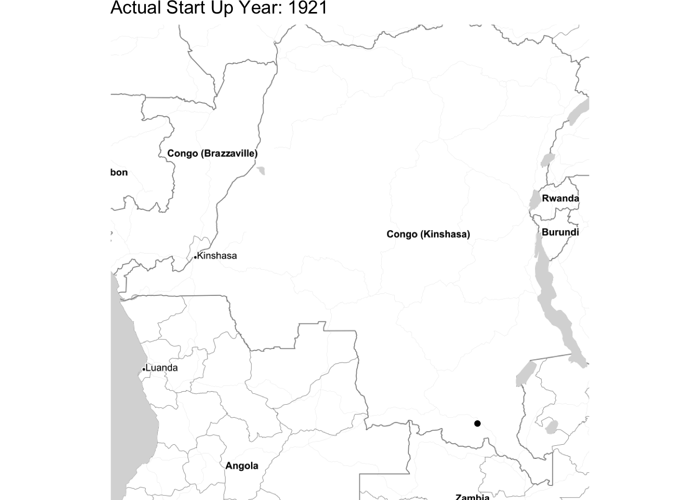
In diesem Plot lässt sich erkennen, dass die Daten sehr lückenhaft sind und wenige Minen-Daten zum Actual_Start_Up_Year enthalten.
4.2 Kamoto-Kupfermine
Die Kamoto-Kupfermine liegt in der Nähe von Kolwezi, Kongo (Kinshasa), Fig 20. Nach [37] wurde der Standort erstmals 1940 entdeckt. Die Kamoto-Kupfermine ist ein Untertage-Bergbaubetrieb. Die erste Produktion fand 1950 statt. Zu den unterirdischen Anlagen gehören 5 Schächte und 2 Stollen. Der Bergbau läuft nach einem kombinierten Verfahren. Der Standort stellt die größte aktive Kobaltmine der Welt dar. Die Abbaurechte gehören der Kamoto Copper Company (KCC), einem Joint Venture zwischen Katanga Mining (75 %) und dem staatlichen Unternehmen Gécamines (25 %). Gécamines nahm 1969 den Betrieb der Kamoto-Untertagemine auf. In den 1980er Jahren produzierte das Bergwerk jährlich drei Millionen Tonnen Erz. Eine Schließung fand im Oktober 1990 statt. Im November 2006 bestätigte eine Machbarkeitsstudie eine Wiedereröffnung. Im April 2018 beantragte Gécamines die Auflösung des Joint Ventures, welches die Kamoto-Mine betreibt. Dies wurde den Schulden in Höhe von über 9 Mrd. USD begründet, welche die Mine bei Glencore und seinen Tochtergesellschaften hatte. Im November 2018 wurde der Bergbau in Kamoto vorübergehend eingestellt, da in den Vorräten Radioaktivität festgestellt wurde.
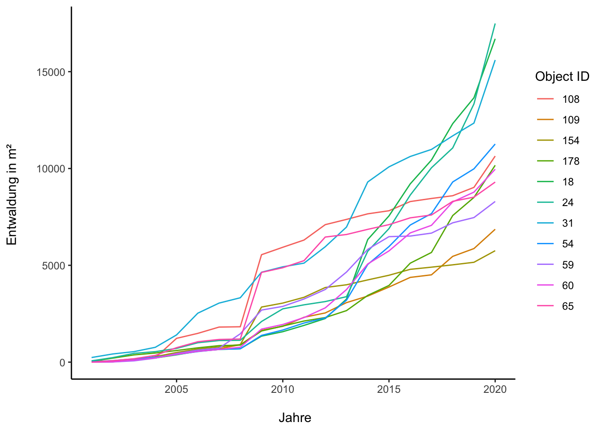
4.2.1 Vergleichende Beschreibung der Daten und der Observation
Auch hier liegen sieben S&P Minen Punkte innerhalb des Minenpolygons und vier Punkte direkt angrenzend außerhalb. Eine genaue Zuordnung ist demnach erst durch eine Recherche möglich gewesen. Nicht alle Minen sind zugehörig zu einem Konzern. Jedoch ist der Konzern Glencore plc und die Republik Congo als Venturer meist vertreten.
- Die Entwaldungsdaten Fig 21 zeigen eine höhrere Entwaldung im Süd-Westen der Minenregion, die Satellitenbilder bestätigen diese Werte
- Das Closure Year 1990 bestätigt sich in der Recherche.
- Die 2006 bestätigte Wiedereröffnung stimmt nicht exakt mit den S&P Daten überein (2007)
- Die 2018 entschiedene Schließung findet keine Erwähnung in den S&P Daten
- Die [28] -Daten bilden nicht den exakten Umfang der Mine aus dem Jahr 2022 ab.
- Mittlerweile erfolgte eine geringfügig weitere Expansion, siehe Storymap
| Type of Information | Information | |
|---|---|---|
| congo_mines:OBJECTID | 59 | |
| congo_mines:Property_Name | Kamoto | |
| congo_mines:Primary_Commodity | Copper | |
| congo_mines:Development_Stage | Operating | |
| congo_mines:Activity_Status | Active | |
| congo_mines:Mine_Type1 | Open Pit | |
| congo_mines:Property_Name1 | Kamoto | |
| congo_mines:Commodity_1 | Copper | |
| congo_mines:Commodity_2 | Cobalt | |
| congo_mines:Global_Region | Africa | |
| congo_mines:State_Province | Lualaba | |
| congo_mines:List_of_Owners | Glencore plc (Venturer) 75%; Gécamines SA (Venturer) 25% | |
| congo_mines:Owner_Name | Glencore plc | |
| congo_mines:Actual_Start_Up_Year | 2007 | |
| congo_mines:Projected_Start_Up_Year | 2007 | |
| congo_mines:Projected_Closure_Year | 2041 | |
| congo_mines:Actual_Closure_Year | 1990 | |
| congo_mines:Mining_Methods | Long Hole Stoping, Open Pit, Room & Pillar, Tailings | |
| congo_mines:Processing_Methods | Crushing, Flotation, Leach, Roasting, Semi-Autogenous Grinding, Solvent-Extraction Electrowinning |
5 Fazit
Die S&P Koordinaten, der in dieser Arbeit untersuchten Minen waren sehr genau und ergaben in den vier Casestudies praktisch keine Abweichungen. Ungenauigkeiten und geringe Aktualisierungsraten der Daten konnten in der Variable Projected_Closure_Year und Actual_Closure_Year nachgewiesen werden. Besonders die Daten bezüglich der Variablen Actual_Start_Up_Year, Projected_Closure_Year und Actual_Closure_Year fehlten häufiger, sowie andere Variablen (siehe Kapitel 1.2). Die Datenqualität der Länder variiert dabei stark, besonders in Indonesien ist die Datenqualität hoch, es fehlen nur teilweise die Zeitdaten. Die [28] -Daten sind relativ präzise, bilden jedoch keine Minenausbreitung seit 2020 ab, siehe Kapitel 3. Einige Minen haben sich seither weiter über die Polygone hinaus ausgebreitet, da es sich hierbei um aktive Minen handelt und die Polygone mehrheitlich aus dem Jahre 2020 stammen. Siehe zum Vergleich: Storymap. Historisch sind Minen zusammengewachsen, welches die [28] -Polygone erklärt, welche mehrere S&P-Koordinaten enthalten. Es zeigt sich, dass [28] verschiedene Minen in einem Polygon zusammenlegt, unabhängig von Eigentumsrechten. Diese Minen sind teilweise sehr heterogen in ihren S&P Daten, siehe Tabelle 5.
Die Visualisierung der Entwaldungsdaten konnte systematische Zusammenhänge der Minenunfälle Kapitel 2.2 & Kapitel 2.3 und der Entwaldungsdaten, nach [29] aufzeigen: siehe Fig 10 & Fig 12. Zusammenfassend weisen die Daten grundsätzlich eine hohe Datengenauigkeit auf. Hinsichtlich zeitlicher Variablen (Actual_Start_Up_Year, Projected_Closure_Year, Actual_Closure_Year) lässt sich ein deutlicher Länderunterschied feststellen, Kapitel 1.2. Auch sind die zeitlichen Variablen nicht immer aktuell und können daher nur mit vorheriger Recherche sicher verwendet werden, beziehungsweise benötigen eine manuelle Aktualsierung. Darüber hinaus ist der S&P-Datensatz ebenfalls als historisches Dokument zu interpretieren und ermöglicht es, die zeitliche Umstruktuierungen von Minen und deren Eigentümer im Zusammenhang von Satellitenbildern nachzuvollziehen. Um eine generelle Aussage hinsichtlich der länderspezifischen Datenqualität zu machen, ist die Stichprobengröße nicht ausreichend groß. Brauchbare Satellitenbilder für eine Rückverfolgung sind erst ab 1984 verfügbar, wobei einige Minen bereits vorher eröffnet wurden.